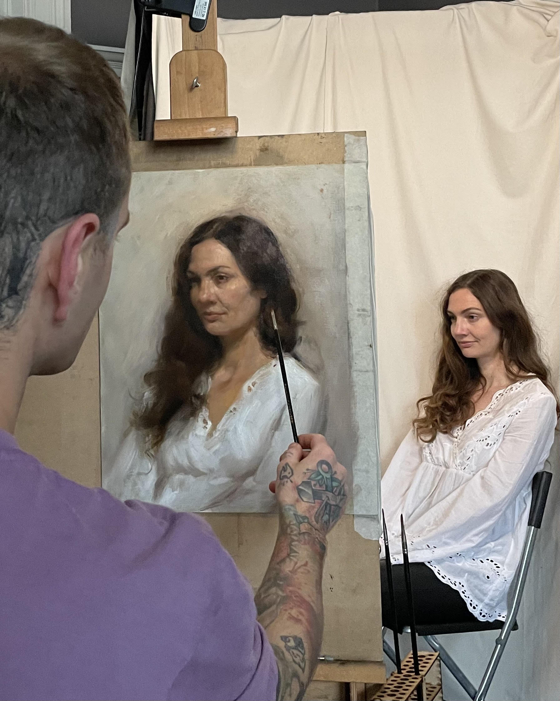

Our Other Services

BLACK & GREY
Timeless shading and contrast, creating depth and detail with a classic touch.
Read More

Home / Colour Tattoos
Turn your ideas into vivid artwork with rich hues, smooth blends, and striking contrast. At Watcher Tattoo, our Professional Tattoo Artist Glasgow team specialises in bold colour work and realistic gradients that pop on every skin tone. From subtle watercolour washes to full color realism tattoo in Glasgow, we craft custom pieces that last.
smooth blends that make your tattoo stand out—crafted at the Best Tattoo Parlour in Glasgow experience you deserve.
From florals to portraits, our artists deliver lifelike depth—your go-to for Best realism tattoo artist Glasgow results.
Sterile, precise, and comfort-first—guided by a Professional Tattoo Artist Glasgow team from consult to aftercare.
Colour tattoos demand precise pigment selection, skin-tone mapping, and fade-resistant shading. Our planning includes contrast checks, lighting, and placement so your piece looks incredible now and ages gracefully. For clients seeking a refresh, we also design colour-forward reworks and are trusted for the Best tattoo cover up Glasgow approach when colour is the right solution.
Whether you want a soft watercolour look or high-definition Best color realism tattoo in Glasgow, our process ensures clarity, depth, and durability—exactly what you expect from the Best Tattoo Store In Glasgow.
Everything you need to know about colour tattoos at the Best Tattoo Studio In Glasgow.
All tattoos fade over time, but premium pigments, proper placement, and good aftercare keep colours bright for years. During your Tattoo Consultation Glasgow, we’ll recommend tones that hold up beautifully on your skin.
Yes—our artists specialise in lifelike colour work. If you’re after the Best realism tattoo artist Glasgow standard, we’ll map reference lighting and tones for a photo-true finish.
Pain is comparable to other styles. Sessions can be longer because colours require layering and blending—our Tattoo artist in Glasgow team will pace it for comfort and quality.
Absolutely. Strategic colour and contrast are powerful for concealment. If needed, we’ll combine techniques to deliver the Best tattoo cover up Glasgow results with a new, vibrant design.
Timeless shading and contrast, creating depth and detail with a classic touch.
Read More